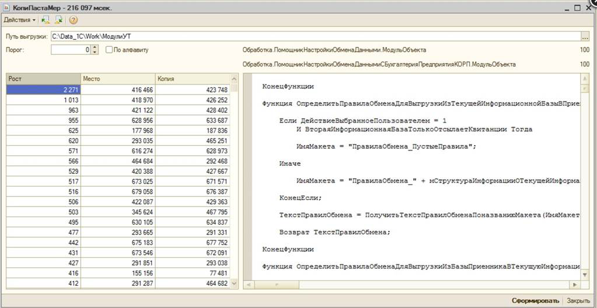

Предлагается отчет, который за приемлемое время находит и показывает ВСЕ повторяющиеся фрагменты в текстах программных модулей анализируемой конфигурации. Приводятся подробности реализации отчета, основанного на алгоритме Манбера и Майерса построения суффиксного массива и на алгоритме Касаи построения LCP-массива. В данной реализации поиск повторов ведется до уровня строк. Отчет можно применять для определения повторяющихся последовательностей строк и в любых других текстах.

Считать ли злом копирование фрагментов кода (копипаст) впроцессе программировании на 1С – решайте сами. Есть другой интересный вопрос – как найти и измерить копипаст в уженаписанной программе. Одна из возможностей - использование предлагаемого отчета.
Перед использованием отчета тексты программных модулей анализируемой конфигурации необходимо выгрузить в некоторую папку. Это можно сделать через конфигуратор с использованием пункта меню "Конфигурация\Выгрузить файлы конфигурации". Далее можно запустить формирование отчета, указав ту папку, в которую были выгружены файлы. Через несколько минут (время зависит от общего числа строк в программных модулях) отчет покажет список повторов в виде таблицы, каждая запись которой содержит размер повторяющегося фрагмента в строках, место фрагмента и его копии в сквозной нумерации строк всех модулей. Выделив конкретный повтор в списке, можно увидеть сам фрагмент, имя содержащего его модуля и номер строки начала фрагмента в данном модуле, а также имя модуля и номер строки копии фрагмента.
Применив отчет к некоторым типовым конфигурациям, можно увидеть, что например, в 1С: Бухгалтерии 2.0 общее число строк всех модулей конфигурации превышает 3,5 миллиона (на их анализ ушло порядка 20 минут). При этом имеется очень большое количество повторений фрагментов. В основном повторяются тексты модулей в регламентированной отчетности. Длина цельнотянутых кусков достигает 10 тысяч строк! А повторение тысячи строк в этой подсистеме - вообще норма. В других подсистемах также можно встретить очень большие повторяющиеся куски. Впрочем, лучше один раз увидеть, чем сто раз услышать: смотрите и удивляйтесь!
Несколько слов о реализации.
Основная идея метода - использование LCP-массива, который строится по конкатенации текстов модулей анализируемой конфигурации.
Формирование отчета состоит из этапов:
Процедура ПолучитьСуффиксныйМассив_(Ранг, След, Охват = 1) Экспорт
Старший = След.ВГраница();
К = Ранг.Количество();
Пока Старший < Ранг.ВГраница() Цикл
Змея = Новый Массив(Ранг.Количество(), 1);
Для у = 0 По След.ВГраница() Цикл
Для ж = 1 По След[у].ВГраница() Цикл
ё = (Цел(След[у][ж]) - Охват + К) % К;
х = Ранг[(ё + Охват) % К];
Змея[Ранг[ё]].Добавить(ё + 0.1 * (Змея[Ранг[ё]][0] <> х));
Змея[Ранг[ё]][0] = х
КонецЦикла
КонецЦикла;
Старший = - 1;
Для у = 0 По К - 1 Цикл
Для ж = 1 По Змея[у].ВГраница() Цикл
ё = Змея[у][ж];
Старший = Старший + ё % 1 * 10;
Ранг[ё] = Старший
КонецЦикла
КонецЦикла;
Охват = Охват * 2;
След = Змея
КонецЦикла
КонецПроцедуры
Построение LCP-массива. LCP-массив показывает для каждого символа строки (это каждая строка программы в нашем случае) длину наибольшего общего префикса для подстроки, начинающейся в данном месте, и подстроки, следующей за ней в суффиксном массиве. Буквально это и есть длина наибольшего повторяющегося фрагмента, начинающегося в данном месте. Небольшая деталь заключается в несимметричности связи этих одинаковых фрагментов, которая в данном случае оказывается даже выгодной. Поскольку найденная копия окажется в суффиксном массиве позже, то для нее уже не будет копией текущий фрагмент. Поэтому каждый фрагмент будет встречаться в выдаче алгоритма только один раз. Построение LCP-массива выполняется по алгоритму Касаи. Вот код процедуры построения LCP-массива:
Процедура ПолучитьДлиныНаибольшихОбщихПрефиксов_(Тень, Ранг, Путь, Рост, Плюс = 0) Экспорт
Для ё = 0 По Ранг.ВГраница() Цикл
Путь[Ранг[ё]] = ё
КонецЦикла;
Для ё = 0 По Ранг.ВГраница() Цикл
ж = ?(Ранг[ё] < Ранг.ВГраница(), Путь[Ранг[ё] + 1], Ранг.Количество());
Пока Макс(ё, ж) + Плюс < Тень.Количество() И Тень[ё + Плюс] = Тень[ж + Плюс] Цикл
Плюс = Плюс + 1
КонецЦикла;
Рост[ё] = Плюс;
Плюс = Макс(0, Плюс - 1)
КонецЦикла
КонецПроцедуры
Выделение повторов из LCP-массива. Если представить LCP-массив графиком, то интерес для отображения повторов будут иметь только зубцы этого графика, поскольку другие точки будут соответствовать меньшим по размеру повторам, полностью входящим в бОльший по размеру повтор слева (сверху). Наибольшие повторы отбираются простейшим алгоритмом сравнения текущего значения со значениями слева и справа. При этом в отчете можно задать порог, чтобы не выбирались повторы, число строк в которых меньше этого порога. Вот код выделения повторов:
Функция ОтборМестПовторов_(Ранг, Путь, Рост) Экспорт
Ответ = Повторы.ВыгрузитьКолонки();
Для ё = 0 По Рост.ВГраница() Цикл
у = Макс(0, ё - 1); ж = Мин(ё + 1, Рост.ВГраница());
Если Порог < Рост[ё] И Рост[у] <= Рост[ё] И Рост[ё] >= Рост[ж] Тогда
э = Ответ.Добавить();
э.Место = ё;
э.Рост = Рост[ё];
э.Копия = Путь[Ранг[ё] + 1]
КонецЕсли
КонецЦикла;
Возврат Ответ
КонецФункции
И, наконец,повторы сортируются в порядке убывания их размеров.
Выводы
Ссылки